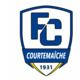
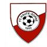
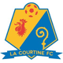

Première équipe
4e ligue FC Courfaivre
FC Courfaivre
4 – 1
Terminé

FC Courtemaîche
FC Courfaivre

FC Courtemaîche
FC Courfaivre

FC Haute-SorneVie du club · Loto
Rendez-vous au centre sportif de Courfaivre. Plus d’informations suivront.
Lire l’article →Deuxième équipe · Automne 2026
Quatrième avec 20 points en dix matchs et 38 buts inscrits, la Deux reste au contact des premières places.
Lire l’article →Première équipe · Automne 2026
Le FCC boucle ses onze rencontres de championnat à la deuxième place, avec 23 points et 37 buts inscrits.
Lire l’article →FC CourfaivreÀ l’extérieur
Copie ASF du 18.11.2026
FC Courfaivre
FC La CourtineÀ domicile
Copie ASF du 18.11.2026
Merci à nos partenaires pour leur soutien au FC Courfaivre.
Tu souhaites soutenir le FC Courfaivre ?
Devenir partenaire →